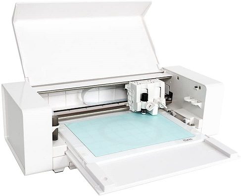
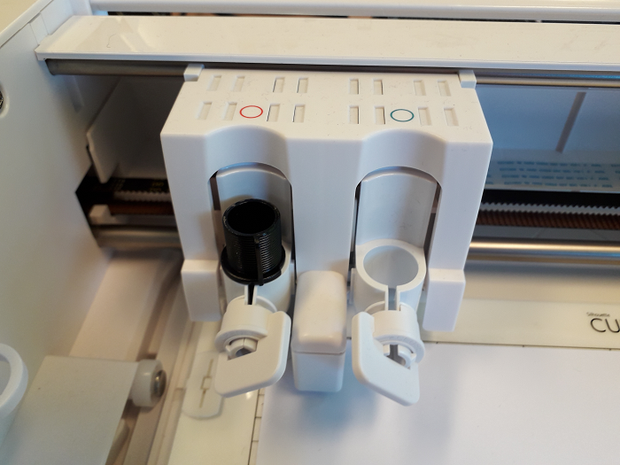
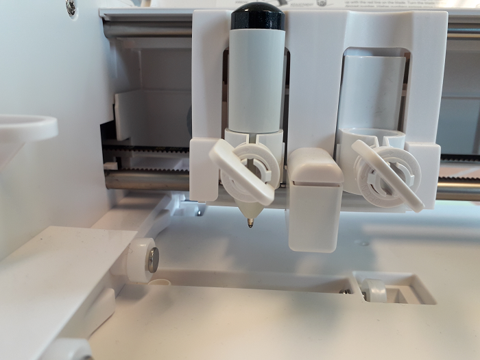
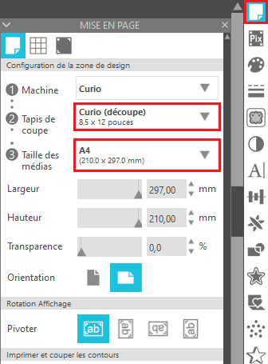
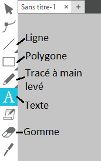

Découpeuse vinyle: Silhouette Curio¶
Note
Le papier doit dépasser les bordures en haut à gauche. Renforcer l’adhérence en pressant avec la main.
Todo: PixScan: http://www.silhouettefr.fr/silhouette_pixscan01.html
Donner les défintions de: couper, embosser,tracer, poinçonner et gratter. Expliquer terme rainer.
Attention
La Curio ne découpe pas les rouleaux.
Attention
Le poinçonnage peut être bruyant.
Note
Pour l’embossage les Silhouette Score & Papier Relief sont recommandés.
montrer le mode mirroir, l’envoie en découpe propose le mode mirroir normalement, idéal pour le transfert textile et le papier de transfert sur vinyle (utiliser rackclette)
Défintion: echeniller : retirer les parties négatives, celles que l’on ne souhaite pas garder.
Note
le crochet Silhouette pour écheniller.
Q: Puis-je découper de la matière en rouleau avec ma Curio? A: Non. La Curio nécessite une base dure pour la découpe et possède une surface limitée de coupe.
Qu’est-ce que le poinçonnage? Le poinçonnage est le processus de création d’une conception en utilisant une série de points. La Curio offre la possibilité de produire des effets de poinçons. C’est réalisé avec un stylo feutre pour dessiner les pointillés ou avec l’outil de poinçonnage pour marquer une série de points
Générer des templates: https://www.templatemaker.nl/fr/
Réglages découpe 1: https://www.noscreas.fr/trucs-astuces-fiches-techniques/nos-reglages-de-decoupe/ Réglages découpe 2: https://boutdepapier.reskator.fr/2012/04/07/reglages-de-coupe-pour-quelques-papiers/
todo lexique tapis Papier de transfert à aplanir pour coller la découpe Le store et récupérer des images
Vracs: Guide officiel: https://www.silhcdn.com/m/d/user-guides/curio-en.pdf Tuto: https://www.findingtimetocreate.com/2016/11/getting-started-silhouette-curio/ Tuto 2: https://silhouette-secrets.com/2019/03/13/lets-explore-the-curio-getting-started/ Emboss: https://youtu.be/x16kJ5ClA9I
Setting up your Silhouette Curio: https://youtu.be/FrmaGT_qzXo Curio review: https://www.youtube.com/watch?v=wg4Yd1rmpuc
How to cut images on Silhouette Curio 3t for beginners, simple, easy, quick: https://www.youtube.com/watch?v=HnJT4H78BOs
fiche technique: https://www.lafourmicreative.fr/silhouette/86892-silhouette-curio-814792018705.html
Matériel¶
Logiciels¶
Utilisation¶
Préparation du matériel¶
Libérez de l’espace pour déplier les pieds de stabilisation à l’avant et arrière de la Curio.
Prenez une base d’adhérence aux dimensions de la matière à couper.
Enlevez la protection et collez la matière.
Important
La matière doit être alignée en haut à droite du tapis.
Accrochez-le avec les quatre maintiens sur le côté.
Attention
TODO parler des plateformes et comment les choisir. Il y en a une de 1 et deux de 2. Apparemment visible dans Studio.
Glissez le support dans la curio, l’encoche (cercle rouge) doit dépasser le bord de la Curio (trait orange):
Prenez la lame de découpe ou le stylo. Pour la lame, réglez sa profondeur avec l’avant de la Curio. La flèche rouge indique la profondeur choisie, cette flèche dit être alignée avec l’avant de la Curio pour procéder au réglage.
Note
Profondeurs de lame:
1: vinyl
2 - 3: papier
4 - 6: papier cartonné
7 - 10: toile
Placez la lame ou le stylo à l’emplacement du cercle rouge, tournez l’interrupteur dans le sens inverse des aiguilles d’une montre pour l’ouvrir et dans l’autre pour le verrouiller.
Lame en place:
Stylo en place:
Branchez et allumez la Curio, la machine va initialiser sa position par défaut.
Note
Vous pouvez initialiser la position par défaut en cliquant sur le bouton avec les deux flèches (à droite du bouton, pause).
Préparer une découpe avec Silhouette Studio¶
a
Vous ne pouvez pas modifier la taille du texte dans les options, vous verrez plus bas comment faire.

Après un clic:
cadre de sélection pour redimensionner
cercle vert pour orienter